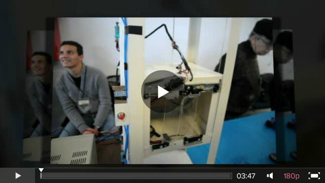
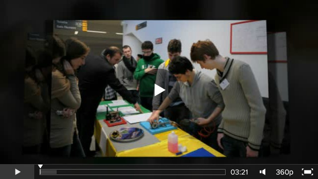
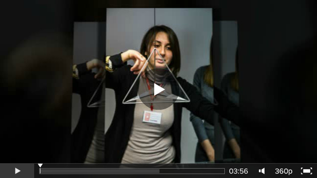
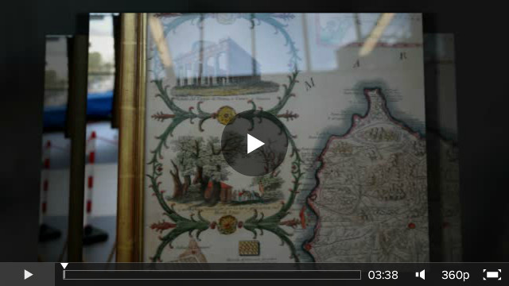
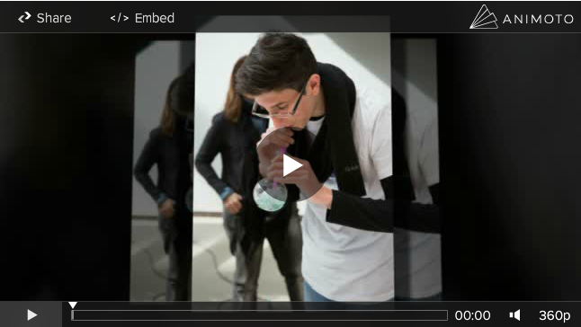
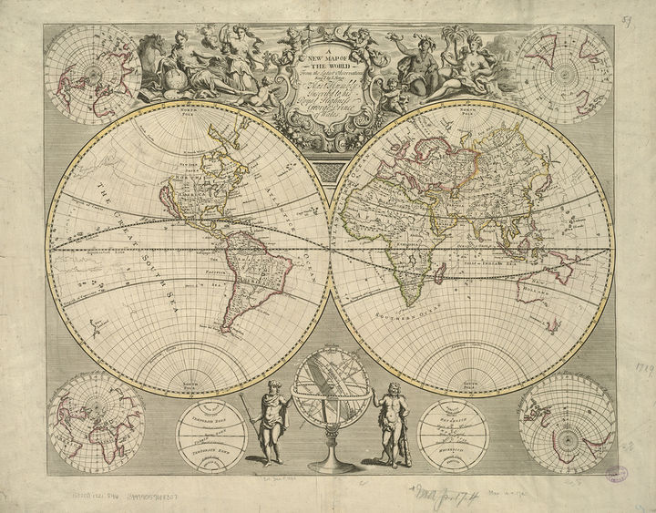

You are hereNews
News
Le ultime notizie di PalermoScienza
Ultimo giorno di Esperienza inSegna 2013: Mappare l'ambiente... ma la cura continua!
Una delle novità della sesta edizione di Esperienza inSegna 2013 è stata l'istituzione di un premio dedicato ai migliori exhibit ideati e costruiti dagli studenti.
Una commissione appositamente istituita e composta dal prof. Carmelo Arena, vicepresidente dell'associazione PALERMOSCIENZA, dal dott. Claudio Fazio, ricercatore presso il Dipartimento di Fisica e Chimica dell'Università di Palermo e dal prof. Maurizio Leone, presidente dell'associazione Scienza Felicissima e direttore del Dipartimento di Fisica e Chimica dell'Università di Palermo, ha effettuato la scelta dei primi tre migliori exhibit per fascia scolare (scuola primaria, scuola secondaria di primo e di secondo grado) in base alla qualità della costruzione, alla funzionalità e all'attrattiva dell'oggetto, valutando inoltre le competenze espositive dei giovani partecipanti. Nel video alcune fasi della premiazione e, a contorno, brevi visioni delle attività parallele.
Continuate a seguirci, molto presto ci sarà un'altra pillola... 
Sesto giorno di Esperienza inSegna 2013, sesto giorno di cura!
La mattina della sesta giornata comincia all'insegna della musica: ritornano Mario Ferreri ed Eliana Danzì con l'orchestra della Scuola secondaria di 1° grado Vittorio Emanuele III di Palermo che propongono quest'anno la conferenza-spettacolo Mappare lo spazio... mappare la musica, e il cervello che fa?
Sempre presenti gli appuntamenti con i laboratori Fare per capire tra i quali: A spasso tra le note a cura dell'associazione PALERMOSCIENZA e dell'Accademia corale Henri Farge e Orientarsi a cura dell'associazione PALERMOSCIENZA.
E poi ancora il laboratorio Sentieri nell'ambiente a cura di EcoCampus adventure, le numerose e varie esposizioni di exhibit, gli spettacoli teatrali,, le mostre laboratoriali...
A domani! 
Esperienza inSegna 2013, siamo giunti alla terzultima pillola!
Tra i corridoi di un affollattissimo Polididattico e gli spazi esterni circostanti è trascorsa una delle più dense giornate di Esperienza inSegna 2013: Mappare l'ambiente.
Riprende il tema la conferenza interattiva Mappe volanti di Andrea Borruso, Consorzio Ticonzero, che mostra come con i droni e il telerilevamento di prossimità si possa realizzare cartografia aerea di qualità.
A metà mattinata l'interessante e utile laboratorio Dimostrazioni di disostruzione pediatrica, a cura della Croce Rossa Italiana – Comitato Provinciale di Palermo, che ha visto la partecipazione attiva e attenta del pubblico.
Vi è stata inoltre la seconda (e penultima replica) dello spettacolo teatrale Il mangiapaesaggi, a cura di Gloria Calì, con i giovanissimi attori della Scuola Secondaria di 1°grado Cosmo Guastella di Misilmeri.
A domani! 
Esperienza inSegna 2013: Mappare l'ambiente, quarta giornata.
La quarta giornata di Esperienza inSegna 2013 si apre con i due nuovi laboratori Fare per capire proposti dall'associazione PALERMOSCIENZA: Orientarsi e A spasso tra le note (quest'ultimo sviluppato in collaborazione con l'Accademia corale Henri Farge).
La conferenza del giorno è Immagini di Sicilia, a cura del Dott. Antonio La Gumina, incentrata sull'Isola e il Mediterraneo visti attraverso la rappresentazione cartografica e la sua evoluzione nel tempo (da Idrisi al diciannovesimo secolo). Durante la conferenza sono state esposte cinque antiche carte geografiche, provenienti dalla sua ricchissima collezione.
Continuano intanto le visite guidate ai diversi e numerosi laboratori previsti nel calendario della manifestazione e, passeggiando per i grandi spazi del Polididattico, si scoprono nuove esposizioni. Gradita sorpresa della giornata, infine, è stata la visita dell'Assessore alla Cultura Francesco Giambrone. 
Terzo giorno di Esperienza inSegna 2013... terza pillola!
La terza giornata comincia con l'interessante convegno Memoria scientiae, giunto alla sua quarta edizione. Pietro Li Causi e Roberto Pomelli, curatori del convegno, hanno incentrato il loro quarto incontro sul tema Mappe con gli animali. La zoologia e la rappresentazione dello spazio nel mondo antico.
Nel frattempo continuano i laboratori Fare per capire e Gioco-imparo curati, come ogni anno, dall'associazione PALERMOSCIENZA: capita così di imbattersi in giovani "armati" di interfaccia e planimetria del Polididattico (sono i partecipanti del laboratorio Mappe sensoriali!) o di vedere bambini con bianche ali e un vestito a grandi righe sul dorso (i giovani "attori" del laboratorio La danza delle api). Apriamo un'altra porta e ci addentriamo ne La bellezza della matematica mostra laboratoriale (a cura dell'associazione PALERMOSCIENZA, Dipartimento di Matematica e Informatica – Università di Palermo) che mette a fuoco bellezza e funzionalità degli exhibit matematici ideati e realizzati nell’ambito del progetto “Botteghe della scienza 2012”.
Poi partecipiamo a Tour the library. Tappe e mappe per scoprire la Biblioteca, laboratorio a cura del Sistema Bibliotecario d'Ateneo – Università di Palermo, che guida i giovani studenti alla scoperta della biblioteca come luogo di incontro tra libri, storia e gioco, in cui conoscere la storia di ogni libro e fare propri gli strumenti utili a svelarci un pò più della nostra memoria.
Alla pillola di domani! 
Seconda pillola di Esperienza inSegna 2013: la cura continua!
Tra le numerose attività previste in calendario per Esperienza inSegna 2013: Mappare l'ambiente si inseriscono le conferenze, ogni giorno diverse e caratteristiche.
Nella seconda giornata abbiamo assistito alle due conferenze: "Rilevamento GPS e mappatura di informazioni geografiche per applicazioni nei settori epidemiologico, ambientale e turistico", a cura di Andrea Scianna, ICAR – CNR e GISLAB CNR – UNIPA e "Ocean literacy" a cura di Valeria Matranga, IBIM – CNR.
Poi, sempre in giro per il Polididattico, scoprendo che tra i tavoli (e non solo) si nascondono mille sorprese...
A domani!

Rassegna stampa web Esperienza inSegna 2013: grazie all'ufficio stampa!
In questi giorni molto "densi" di avvenimenti, l'ufficio stampa di Futurantica ha lavorato per fare arrivare il più lontano possibile l'eco di questa mostra. Molti siti infatti stanno parlando di Esperienza inSegna 2013 e qui sotto ne vedete una sintesi visuale.
Bello no? :)
Comincia la "cura": ecco la prima pillola di Esperienza inSegna 2013!
Dalla prima giornata di Esperienza inSegna 2013: Mappare l'ambiente, ecco un assaggio delle attività previste e del programma del giorno. Ad aprire la manifestazione la tavola rotonda inaugurale introdotta e presieduta dal rettore Roberto Lagalla, dedicata all'associazione Scienza Felicissima, con gli interventi della prof.ssa Marcellina Profumo, presidente dell'associazione PALERMOSCIENZA, il prof. Maurizio Leone, presidente di Scienza Felicissima e delegato del Rettore dell'Università di Palermo per le Attività della Ricerca e il dott. Albanese, presidente di Confindustria Palermo.
A seguire La rappresentazione della Terra: dalle Mappae Mundi a Google Earth, la bella e interessante conferenza del prof. Valerio Agnesi, delegato al Sistema Museale d’Ateneo, per ripercorrere la storia della cartografia, dalle prime rappresentazioni della Terra fino all'era dell'informatica che ha aperto nuovi orizzonti alla rappresentazione della superfice terrestre. Poi, in giro per i lunghi corridoi e tra i tavoli dei numerosi espositori, alla scoperta dei differenti modi scelti da ognuno per rappresentare e rendere vivo il concetto di mappa.
Le foto delle pillole del 2013 sono sempre a cura di Annalisa Conte e di un nuovo amico fotografo: Edoardo Genova.
Alla pillola di domani!
Domani inizia Esperienza inSegna 2013, vi aspettiamo!
Domani, lunedì 18 febbraio, nella sede del Polididattico dell'Università degli Studi di Palermo, prenderà il via la sesta edizione di Esperienza inSegna: Mappare l'ambiente. Si comincerà alle 10.00 con la tavola rotonda inaugurale introdotta e presieduta dal rettore Roberto Lagalla, dedicata all'associazione Scienza Felicissima, costituita dall’Università di Palermo, dalla Camera di Commercio, da Confindustria Palermo e dall’associazione PALERMOSCIENZA, e nata lo scorso anno con l’obiettivo di divulgare la cultura scientifica, attraverso un’integrazione tra il mondo della ricerca e quello dell’impresa.
Alle 11.00 seguirà la conferenza La rappresentazione della Terra: dalle Mappae Mundi a Google Earth del prof. Valerio Agnesi, il delegato al Sistema Museale d’Ateneo che, attraverso il suo intervento, ripercorrerà la storia della cartografia, dalle prime rappresentazioni della Terra fino all'era dell'informatica che ha aperto nuovi orizzonti alla rappresentazione della superfice terrestre.
A domani!

riconoscimenti foto: Norman B. Leventhal Map Center at the BPL
Esperienza inSegna 2013: pubblicato il calendario
Abbiamo pubblicato il calendario di Esperienza inSegna 2013, e lo trovate sul nostro sito:
http://www.palermoscienza.it/esperienza-insegna-2013/esperienza-insegna-2013-calendario
Per avere maggiori informazioni due modalità:
- email segreteria@palermoscienza.it;
- tel. 3668028227 o 3334612148, tra le 9:00 e le 13:00 e tra le 15:00 e le 19:00.
Per tutti gli aggiornamenti vi rimandiamo alla questa sezione News, e alle nostre pagine su facebook e twitter.